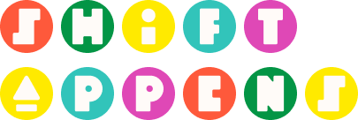

Carrega um PNG com fundo transparente para começar.
PNG com fundo transparente. Arrasta a imagem para mover e usa a roda do rato (ou o slider) para mudar o tamanho.
O contorno 1 é o mais próximo do objeto.